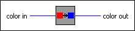

Convert OLE Color VI
Owning Palette: 3D Graph Properties VIs
Requires: Base Development System (Windows)
Converts LabVIEW colors to or from colors used by ActiveX.
You can use the property page for the 3D graph to set all of the colors. Color conversion is necessary for use with ActiveX Property Nodes.

 Add to the block diagram Add to the block diagram |
 Find on the palette Find on the palette |